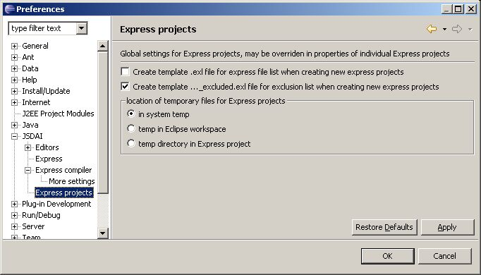

Figure 1. Preferences dialog
window, Express projects panel
Note.
You can set your own settings for an Express project while
creating
a new
project or by going to already created Express project preferences
(right click
on the project and select Properties
-> Express -> Temporary files). Exception: You can not select to
create or not exl
files for the already created Express project, because they could be
created only at once - while creating the project.